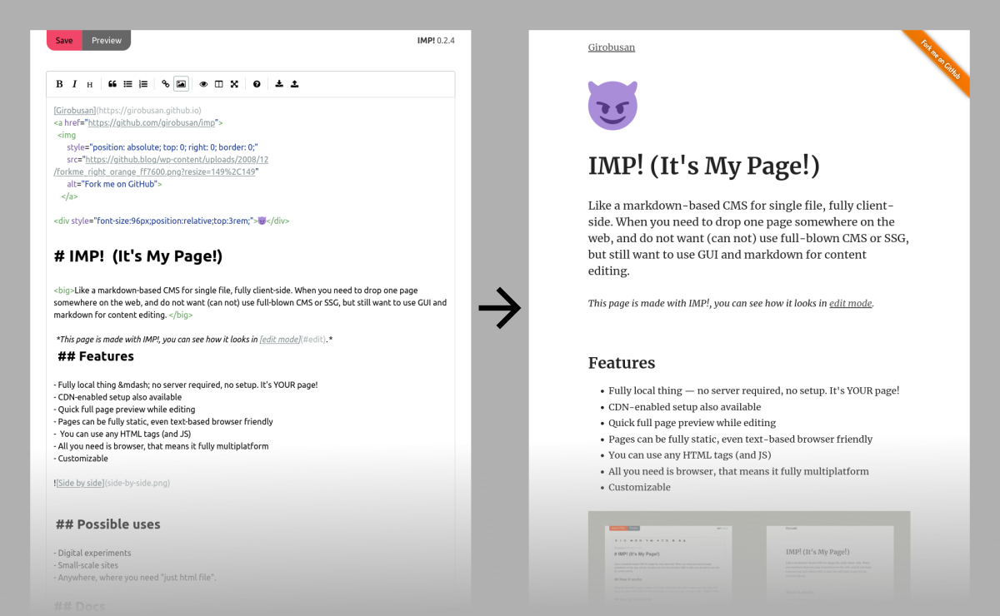

😈
IMP! (It's My Page!)
Like a markdown-based CMS for single file, fully client-side. When you need to drop one page somewhere on the web, and do not want (can not) use full-blown CMS or SSG, but still want to use GUI and markdown for content editing.
This page is made with IMP!, you can see how it looks in edit mode.
Features
- Fully local thing — no server required, no setup. It's YOUR page!
- Editor with preview
- Pages can be fully static, even text-based browser friendly
- All you need is browser, that means it fully multiplatform

Docs
- Quick start manual
- Advanced topics
- Markdown export and import
- Two click install using CDN
- Add emoji favicon
- Themes
Possible uses
- Digital experiments
- Small-scale sites
- Anywhere, where you need "just html file".